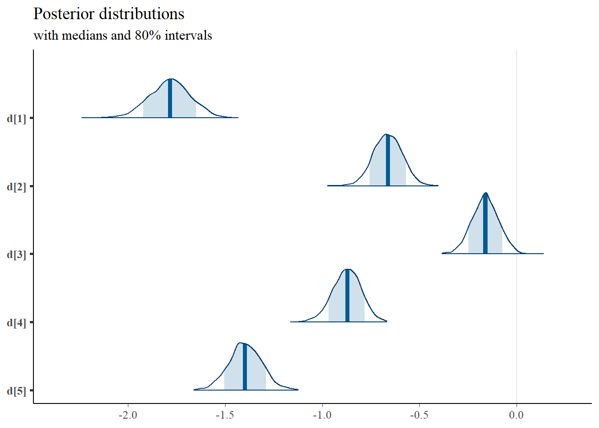
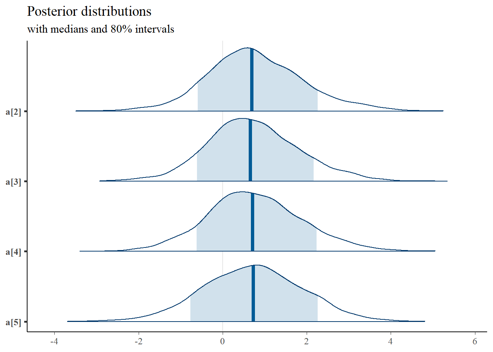
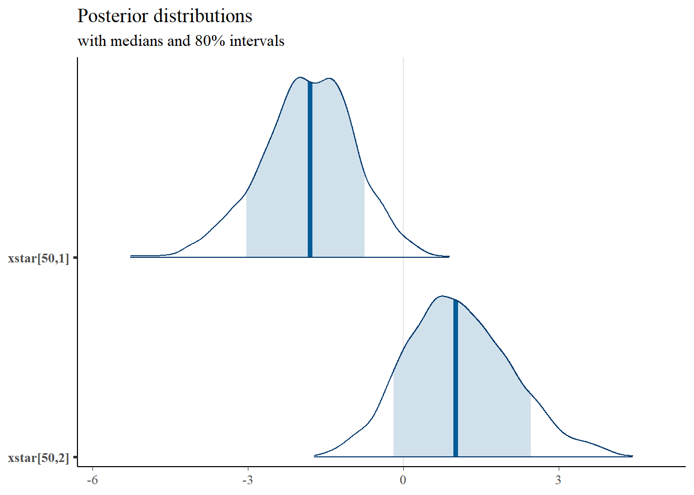

11.9 Latent Response Formulation
Connecting IRT models to a factor analytic perspective can be helpful from a modeling standpoint. Especially when one’s model is multidimensional leading into structural equation models. A useful connection can be made by introducing extra variable(s) into the model to represent the latent response variable underlying the observed categorical response variable. We can think of this latent response variables as
a latent continuous variable hypothesized to underlie the observed categorical variable that discretized due to data collection or difficulty in measurement; or
when this natural interpretation is not appropriate, we can think of the latent response variable as a propensity measure for the given response. Although this is not a perfect interpretation, the use of a latent response formulation eases some of the computational machinery and allows for a nice connection between IRT and CFA models.
Next, the latent response formulation is shown for a set of dichotomous outcomes. This model is conceptually a 2-PL/2-PNO (2 parameter normal ogive) model and is essentially a probit model. The model can be defined as
\[x^{\ast}_{ij} = a_j\theta_i+d_j+\varepsilon_{ij},\]
where, for each \(j\), \(\varepsilon_{ij} \sim \mathrm{Normal}(0, \sigma^2_{\varepsilon_j})\). And can jointly be expressed as
\[x^{\ast}_{ij} \sim \mathrm{Normal}(a_j\theta_i+d_j, \sigma^2_{\varepsilon_j}).\]
The probability of an observed response is then modeled as probability of the latent response variable for person \(i\) on item \(j\) being greater than or equal to some threshold \(\gamma_j\).
11.9.1 LSAT Example Revisted
jags.model.lsat <- function(){
for (i in 1:n){
for(j in 1:J){
# latent response variable
xstar[i,j] ~ dnorm(a[j]*theta[i]+d[j], 1)
P[i,j] <- c[j]+(1-c[j])*phi(xstar[i,j]) # 3P-NO expression
x[i,j] ~ dbern(P[i,j]) # distribution for each observable
}
}
for (i in 1:n){
theta[i] ~ dnorm(0, 1) # distribution for the latent variables
}
for(j in 1:J){
d[j] ~ dnorm(0, .5) # Locations for observables
a[j] ~ dnorm(1, .5); I(0,) # Discriminations for observables
c[j] ~ dbeta(5,17) # Lower asymptotes for observables
}
} # closes the model
# initial values
start_values <- list(
list("d"=c(1.00, 1.00, 1.00, 1.00, 1.00),
"a"=c(1.00, 1.00, 1.00, 1.00, 1.00),
"c"=c(0.20, 0.20, 0.20, 0.20, 0.20)),
list("d"=c(-3.00, -3.00, -3.00, -3.00, -3.00),
"a"=c(3.00, 3.00, 3.00, 3.00, 3.00),
"c"=c(0.50, 0.50, 0.50, 0.50, 0.50)),
list("d"=c(3.00, 3.00, 3.00, 3.00, 3.00),
"a"=c(0.1, 0.1, 0.1, 0.1, 0.1),
"c"=c(0.05, 0.05, 0.05, 0.05, 0.05))
)
# vector of all parameters to save
param_save <- c("a", "d", "c", "theta")
# dataset
dat <- read.table("data/LSAT.dat", header=T)
mydata <- list(
n = nrow(dat),
J = ncol(dat),
x = as.matrix(dat)
)
# fit model
fit <- jags(
model.file=jags.model.lsat,
data=mydata,
inits=start_values,
parameters.to.save = param_save,
n.iter=26000,
n.burnin = 6000,
n.chains = 3,
progress.bar = "none")## Compiling model graph
## Resolving undeclared variables
## Allocating nodes
## Graph information:
## Observed stochastic nodes: 5000
## Unobserved stochastic nodes: 6015
## Total graph size: 36027
##
## Initializing modelprint(fit)## Inference for Bugs model at "C:/Users/noahp/AppData/Local/Temp/RtmpW4ITDP/modelcd01affc14.txt", fit using jags,
## 3 chains, each with 26000 iterations (first 6000 discarded), n.thin = 20
## n.sims = 3000 iterations saved
## mu.vect sd.vect 2.5% 25% 50% 75% 97.5% Rhat n.eff
## a[1] 0.629 0.244 0.238 0.460 0.599 0.765 1.187 1.010 270
## a[2] 0.809 0.264 0.400 0.619 0.768 0.970 1.395 1.005 480
## a[3] 1.440 0.581 0.605 0.993 1.321 1.808 2.773 1.007 420
## a[4] 0.714 0.223 0.356 0.559 0.683 0.842 1.240 1.010 440
## a[5] 0.622 0.261 0.245 0.460 0.591 0.741 1.197 1.027 90
## c[1] 0.249 0.096 0.091 0.178 0.241 0.311 0.454 1.002 1300
## c[2] 0.260 0.097 0.095 0.186 0.252 0.324 0.459 1.003 1100
## c[3] 0.249 0.072 0.105 0.197 0.253 0.304 0.376 1.011 220
## c[4] 0.251 0.097 0.088 0.182 0.244 0.310 0.466 1.005 1000
## c[5] 0.247 0.097 0.088 0.178 0.237 0.305 0.479 1.002 2900
## d[1] 1.969 0.200 1.595 1.844 1.959 2.079 2.420 1.004 3000
## d[2] 0.402 0.254 -0.198 0.270 0.455 0.582 0.781 1.004 690
## d[3] -0.559 0.382 -1.419 -0.806 -0.505 -0.266 0.027 1.014 190
## d[4] 0.730 0.219 0.205 0.620 0.762 0.875 1.064 1.021 520
## d[5] 1.447 0.174 1.067 1.348 1.458 1.559 1.773 1.006 420
## theta[1] -1.624 0.767 -3.169 -2.132 -1.592 -1.088 -0.206 1.001 2300
## theta[2] -1.618 0.784 -3.230 -2.121 -1.592 -1.053 -0.172 1.001 3000
## theta[3] -1.631 0.786 -3.286 -2.143 -1.594 -1.102 -0.117 1.001 3000
## theta[4] -1.285 0.778 -2.876 -1.798 -1.254 -0.737 0.187 1.001 2200
## theta[5] -1.281 0.778 -2.821 -1.806 -1.248 -0.734 0.212 1.001 2800
## theta[6] -1.255 0.783 -2.755 -1.781 -1.231 -0.709 0.224 1.001 3000
## theta[7] -1.273 0.766 -2.811 -1.783 -1.243 -0.751 0.140 1.001 3000
## theta[8] -1.269 0.781 -2.833 -1.782 -1.264 -0.738 0.211 1.003 950
## theta[9] -1.292 0.766 -2.844 -1.799 -1.256 -0.779 0.134 1.001 3000
## theta[10] -1.328 0.790 -2.933 -1.848 -1.315 -0.777 0.135 1.001 3000
## theta[11] -1.292 0.786 -2.877 -1.792 -1.272 -0.764 0.226 1.002 1000
## theta[12] -0.914 0.806 -2.577 -1.451 -0.888 -0.360 0.556 1.001 2100
## theta[13] -0.909 0.788 -2.491 -1.438 -0.869 -0.357 0.538 1.005 480
## theta[14] -0.921 0.784 -2.515 -1.441 -0.915 -0.393 0.579 1.001 3000
## theta[15] -0.926 0.772 -2.497 -1.439 -0.909 -0.387 0.508 1.001 3000
## theta[16] -0.902 0.794 -2.547 -1.425 -0.891 -0.357 0.629 1.001 3000
## theta[17] -0.928 0.757 -2.484 -1.414 -0.908 -0.431 0.473 1.001 2900
## theta[18] -0.917 0.788 -2.455 -1.463 -0.913 -0.371 0.567 1.001 3000
## theta[19] -0.884 0.767 -2.425 -1.383 -0.871 -0.375 0.565 1.002 2000
## theta[20] -0.928 0.779 -2.517 -1.458 -0.912 -0.392 0.571 1.001 2800
## theta[21] -0.926 0.783 -2.454 -1.426 -0.913 -0.385 0.534 1.003 800
## theta[22] -0.919 0.804 -2.560 -1.454 -0.875 -0.358 0.587 1.002 1300
## theta[23] -1.383 0.837 -3.056 -1.953 -1.373 -0.798 0.194 1.004 620
## theta[24] -0.954 0.860 -2.693 -1.526 -0.930 -0.348 0.677 1.001 2300
## theta[25] -0.987 0.879 -2.721 -1.574 -0.999 -0.376 0.694 1.002 1800
## theta[26] -1.021 0.864 -2.707 -1.608 -1.026 -0.430 0.688 1.007 320
## theta[27] -1.002 0.871 -2.800 -1.580 -0.983 -0.408 0.631 1.003 740
## theta[28] -0.510 0.875 -2.206 -1.085 -0.501 0.074 1.200 1.002 1900
## theta[29] -0.486 0.878 -2.239 -1.071 -0.455 0.124 1.215 1.001 2700
## theta[30] -0.485 0.875 -2.244 -1.072 -0.461 0.111 1.142 1.002 1500
## theta[31] -0.534 0.887 -2.314 -1.111 -0.528 0.058 1.196 1.003 740
## theta[32] -1.318 0.769 -2.855 -1.830 -1.305 -0.782 0.148 1.001 2700
## theta[33] -0.940 0.780 -2.518 -1.426 -0.916 -0.409 0.521 1.002 1100
## theta[34] -0.968 0.786 -2.557 -1.494 -0.945 -0.429 0.509 1.001 3000
## theta[35] -0.939 0.788 -2.552 -1.456 -0.899 -0.391 0.534 1.005 500
## theta[36] -0.938 0.797 -2.520 -1.477 -0.921 -0.384 0.587 1.001 2300
## theta[37] -0.920 0.802 -2.553 -1.471 -0.884 -0.360 0.597 1.002 1700
## theta[38] -0.932 0.791 -2.487 -1.448 -0.890 -0.398 0.551 1.001 3000
## theta[39] -0.920 0.779 -2.487 -1.445 -0.932 -0.373 0.596 1.002 1700
## theta[40] -0.931 0.784 -2.557 -1.446 -0.917 -0.378 0.523 1.001 3000
## theta[41] -0.545 0.783 -2.057 -1.076 -0.519 -0.027 0.967 1.003 790
## theta[42] -0.534 0.792 -2.097 -1.056 -0.510 -0.008 1.044 1.001 2700
## theta[43] -0.573 0.779 -2.180 -1.052 -0.560 -0.042 0.923 1.001 3000
## theta[44] -0.543 0.809 -2.180 -1.075 -0.529 0.008 1.034 1.001 3000
## theta[45] -0.548 0.803 -2.131 -1.088 -0.524 -0.022 1.022 1.001 3000
## theta[46] -0.559 0.788 -2.122 -1.094 -0.536 -0.033 0.992 1.001 3000
## theta[47] -0.517 0.808 -2.203 -1.017 -0.496 0.019 1.013 1.005 480
## theta[48] -0.547 0.793 -2.081 -1.069 -0.524 -0.027 0.973 1.006 380
## theta[49] -0.541 0.797 -2.139 -1.078 -0.521 0.007 0.919 1.001 2400
## theta[50] -0.555 0.787 -2.101 -1.064 -0.550 -0.010 0.937 1.003 710
## theta[51] -0.542 0.790 -2.141 -1.057 -0.534 -0.005 0.955 1.006 350
## theta[52] -0.531 0.795 -2.189 -1.022 -0.511 -0.023 0.959 1.002 2700
## theta[53] -0.554 0.797 -2.206 -1.061 -0.529 -0.027 0.928 1.001 3000
## theta[54] -0.549 0.797 -2.140 -1.076 -0.530 -0.009 0.976 1.004 610
## theta[55] -0.562 0.792 -2.124 -1.081 -0.544 -0.029 0.993 1.000 3000
## theta[56] -0.532 0.787 -2.099 -1.051 -0.525 -0.004 1.011 1.003 900
## theta[57] -0.461 0.892 -2.229 -1.046 -0.435 0.148 1.238 1.001 2400
## theta[58] -0.512 0.912 -2.341 -1.144 -0.495 0.124 1.234 1.001 2700
## theta[59] -0.529 0.897 -2.326 -1.121 -0.517 0.103 1.155 1.001 3000
## theta[60] -0.523 0.886 -2.319 -1.091 -0.510 0.084 1.140 1.001 3000
## theta[61] -0.529 0.913 -2.412 -1.138 -0.525 0.101 1.195 1.002 2800
## theta[62] 0.017 0.905 -1.724 -0.621 0.036 0.652 1.784 1.001 3000
## theta[63] 0.024 0.903 -1.764 -0.591 0.038 0.651 1.707 1.005 430
## theta[64] 0.002 0.885 -1.840 -0.583 0.029 0.615 1.669 1.001 3000
## theta[65] 0.031 0.889 -1.777 -0.544 0.039 0.622 1.747 1.001 2900
## theta[66] 0.045 0.902 -1.747 -0.567 0.050 0.679 1.720 1.001 3000
## theta[67] 0.048 0.899 -1.846 -0.539 0.092 0.649 1.762 1.001 3000
## theta[68] 0.029 0.902 -1.812 -0.561 0.034 0.653 1.754 1.002 1400
## theta[69] -0.005 0.917 -1.879 -0.614 0.034 0.629 1.706 1.003 790
## theta[70] -0.012 0.909 -1.851 -0.594 0.006 0.605 1.700 1.001 3000
## theta[71] 0.045 0.896 -1.771 -0.553 0.068 0.658 1.739 1.001 3000
## theta[72] 0.030 0.891 -1.783 -0.566 0.060 0.644 1.671 1.004 610
## theta[73] 0.013 0.895 -1.821 -0.569 0.030 0.629 1.734 1.001 3000
## theta[74] 0.018 0.875 -1.752 -0.545 0.024 0.592 1.714 1.002 1600
## theta[75] 0.023 0.879 -1.790 -0.538 0.015 0.627 1.688 1.001 3000
## theta[76] 0.029 0.895 -1.784 -0.551 0.061 0.621 1.701 1.001 3000
## theta[77] -1.201 0.786 -2.807 -1.709 -1.185 -0.671 0.270 1.001 2800
## theta[78] -1.227 0.770 -2.787 -1.724 -1.217 -0.702 0.223 1.001 2700
## theta[79] -1.238 0.759 -2.783 -1.752 -1.223 -0.708 0.169 1.001 3000
## theta[80] -1.201 0.760 -2.742 -1.706 -1.184 -0.697 0.206 1.001 3000
## theta[81] -1.229 0.749 -2.749 -1.729 -1.216 -0.711 0.173 1.002 2100
## theta[82] -1.208 0.776 -2.793 -1.718 -1.189 -0.685 0.318 1.001 3000
## theta[83] -1.219 0.765 -2.781 -1.717 -1.198 -0.694 0.271 1.001 3000
## theta[84] -1.216 0.776 -2.808 -1.730 -1.194 -0.659 0.193 1.001 3000
## theta[85] -1.239 0.753 -2.780 -1.738 -1.233 -0.727 0.195 1.004 630
## theta[86] -1.237 0.761 -2.794 -1.759 -1.195 -0.719 0.217 1.001 2500
## theta[87] -0.834 0.749 -2.354 -1.342 -0.810 -0.318 0.582 1.001 2600
## theta[88] -0.876 0.760 -2.401 -1.385 -0.851 -0.347 0.575 1.001 2400
## theta[89] -0.841 0.760 -2.418 -1.320 -0.833 -0.330 0.612 1.004 600
## theta[90] -0.854 0.760 -2.348 -1.368 -0.812 -0.347 0.575 1.005 420
## theta[91] -0.830 0.769 -2.352 -1.339 -0.834 -0.309 0.636 1.001 3000
## theta[92] -0.849 0.757 -2.392 -1.348 -0.843 -0.324 0.591 1.001 3000
## theta[93] -0.874 0.777 -2.461 -1.372 -0.867 -0.342 0.618 1.001 3000
## theta[94] -0.845 0.760 -2.476 -1.347 -0.805 -0.336 0.561 1.002 1400
## theta[95] -0.861 0.757 -2.380 -1.377 -0.845 -0.328 0.537 1.001 2400
## theta[96] -0.873 0.749 -2.369 -1.377 -0.866 -0.342 0.516 1.002 1000
## [ reached getOption("max.print") -- omitted 905 rows ]
##
## For each parameter, n.eff is a crude measure of effective sample size,
## and Rhat is the potential scale reduction factor (at convergence, Rhat=1).
##
## DIC info (using the rule, pD = var(deviance)/2)
## pD = 5378.3 and DIC = 9070.2
## DIC is an estimate of expected predictive error (lower deviance is better).round(fit$BUGSoutput$summary[ !rownames(fit$BUGSoutput$summary) %like% "theta", ], 3)## mean sd 2.5% 25% 50% 75% 97.5% Rhat n.eff
## a[1] 0.629 0.244 0.238 0.460 0.599 0.765 1.187 1.010 270
## a[2] 0.809 0.264 0.400 0.619 0.768 0.970 1.395 1.005 480
## a[3] 1.440 0.581 0.605 0.993 1.321 1.808 2.773 1.007 420
## a[4] 0.714 0.223 0.356 0.559 0.683 0.842 1.240 1.010 440
## a[5] 0.622 0.261 0.245 0.460 0.591 0.741 1.197 1.027 90
## c[1] 0.249 0.096 0.091 0.178 0.241 0.311 0.454 1.002 1300
## c[2] 0.260 0.097 0.095 0.186 0.252 0.324 0.459 1.003 1100
## c[3] 0.249 0.072 0.105 0.197 0.253 0.304 0.376 1.011 220
## c[4] 0.251 0.097 0.088 0.182 0.244 0.310 0.466 1.005 1000
## c[5] 0.247 0.097 0.088 0.178 0.237 0.305 0.479 1.002 2900
## d[1] 1.969 0.200 1.595 1.844 1.959 2.079 2.420 1.004 3000
## d[2] 0.402 0.254 -0.198 0.270 0.455 0.582 0.781 1.004 690
## d[3] -0.559 0.382 -1.419 -0.806 -0.505 -0.266 0.027 1.014 190
## d[4] 0.730 0.219 0.205 0.620 0.762 0.875 1.064 1.021 520
## d[5] 1.447 0.174 1.067 1.348 1.458 1.559 1.773 1.006 420
## deviance 3691.893 103.981 3489.316 3621.852 3691.282 3760.804 3901.424 1.008 340# extract posteriors for all chains
jags.mcmc <- as.mcmc(fit)
# the below two plots are too big to be useful given the 1000 observations.
#R2jags::traceplot(jags.mcmc)
# gelman-rubin-brook
#gelman.plot(jags.mcmc)
# convert to single data.frame for density plot
a <- colnames(as.data.frame(jags.mcmc[[1]]))
plot.data <- data.frame(as.matrix(jags.mcmc, chains=T, iters = T))
colnames(plot.data) <- c("chain", "iter", a)
plot_title <- ggtitle("Posterior distributions",
"with medians and 80% intervals")
mcmc_areas(
plot.data,
pars = c(paste0("d[",1:5,"]")),
prob = 0.8) +
plot_title
mcmc_areas(
plot.data,
pars = c(paste0("a[", 1:5, "]")),
prob = 0.8) +
plot_title
mcmc_areas(
plot.data,
pars = c(paste0("c[", 1:5, "]")),
prob = 0.8) +
plot_title